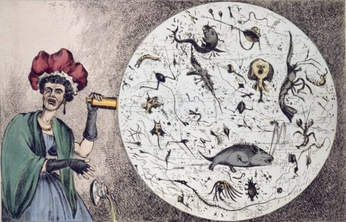
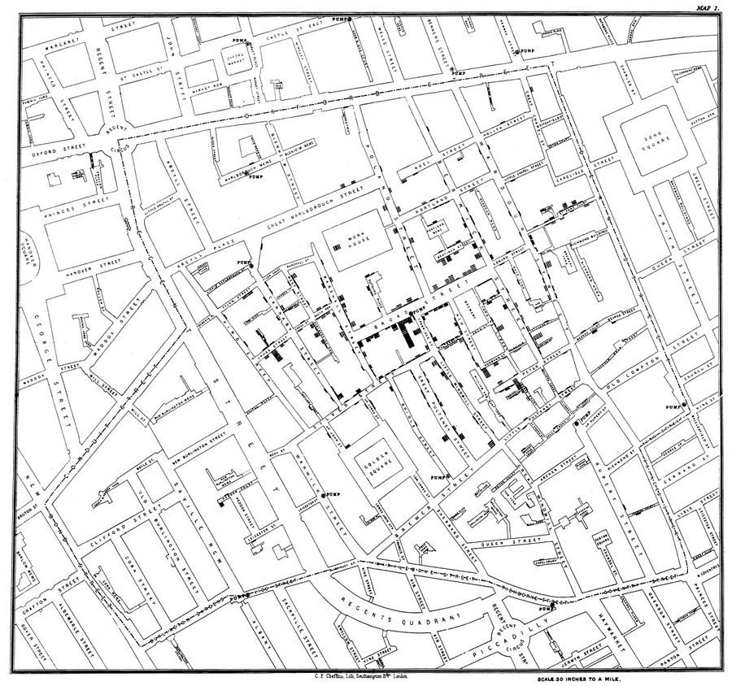

B2 · Science
The Broad Street Pump
A doctor with a map, an outbreak nobody could explain, and the beginning of a science.
Reading
Play the audio and follow along, then read it again on your own. Tap or hover over a highlighted word to see what it means.
John Snow was born in York in 1813, the eldest of nine children in a family with no money to speak of. At fourteen he was apprenticed to a surgeon, which was how medicine was entered at the time, and he went on to qualify in London. He became one of the best anaesthetists in the country — he gave chloroform to Queen Victoria at two of her births — and that is not what he is remembered for.
In the summer of 1854, cholera broke out in Soho, in central London. It killed with a speed that is hard to convey: a person could be well in the morning and dead before the next morning. In the worst week, more than five hundred people died within a few streets.
Nobody knew how the disease traveled. The accepted explanation was miasma — bad air rising from filth and standing water — and it was not a stupid theory. It fitted the observation that outbreaks were worst in the poorest and dirtiest districts, and it was held by almost every serious authority in the country. Snow thought it was wrong. He had argued for years that cholera was swallowed rather than breathed, mainly because it attacked the gut first, which is not what an airborne poison would do.

What he did about it was the part that mattered. He went into the affected streets and recorded every death he could trace — where the person lived, and where their household drew its water. Then he drew a map, marking each death as a bar at its address. The pattern was not subtle once it was on paper. The deaths clustered around a single public water pump in Broad Street, and they thinned out with distance from it.

The anomalies were what made the case. A workhouse in the middle of the cluster, with over five hundred inmates, had almost no deaths — it had its own well. A brewery nearby lost none of its workers; the men drank beer, and the brewery too had its own supply. And a widow in Hampstead, miles away, died of cholera for no visible reason, until it emerged that she had liked the taste of Broad Street water and had it delivered by cart. Each of those cases would have looked like a problem for the theory. Each of them, examined, confirmed it.
Snow took his evidence to the parish authorities and persuaded them to remove the handle from the pump. The outbreak was already declining by then, and honest historians say the removal probably did not end it. That does not diminish what happened, because the argument was never really about one pump. Later investigation found the pump's well had been dug within a meter of an old cesspit, and that a diaper from a baby with cholera had been washed into it.
The Board of Health rejected his explanation. Their report concluded that the evidence pointed to the air, and Snow died in 1858 without seeing his theory accepted. The germ theory that would have explained his findings was still two decades away.
What survives is not really the conclusion but the method: define the population, count the cases, map them against a suspected cause, and then hunt for the cases that do not fit. That is epidemiology, and it was assembled in a few weeks in Soho by a man who was, on the only point that mattered, alone.
Key Vocabulary
- to speak of worth mentioning — used in the negative to mean almost none
- to be apprenticed to to be placed with a skilled worker to learn their trade
- to qualify to complete the training that allows you to practice a profession
- anaesthetist a doctor who puts patients to sleep for surgery
- to break out to begin suddenly, said of a disease or a fire
- to convey to communicate a sense of something
- miasma the old belief that disease rose as bad air from filth
- filth disgusting dirt
- to hold a theory to believe it
- gut the stomach and intestines
- airborne carried through the air
- to trace to follow something back to its source
- to draw water to take water from a well or pump
- pump a device for raising water from underground
- subtle faint; hard to notice
- to cluster to gather closely in one area
- to thin out to become fewer and more spread out
- anomaly a case that does not fit the pattern
- workhouse a Victorian institution where the destitute lived and worked
- well a deep hole dug to reach water underground
- cesspit an underground pit for sewage
- to diminish to make something seem smaller or less important
- epidemiology the study of how disease spreads through populations
The Broad Street Pump — B2 · Science · Renan the Teacher, English Language Academy · https://renangrossi.github.io/englishclasses/reading/b2/john-snow.html
Interactive Exercises
Practice
Complete each exercise, then click Submit to see your score and an explanation for every answer.
Speaking & Writing
Discussion
There are no right answers here — use these to practice speaking, or write a short answer to each.
- Snow was right and could not prove why, because the mechanism had not been discovered. How should experts treat a conclusion that works without an explanation?
- The anomalies — the workhouse, the brewery, the widow — turned out to be the strongest evidence. Why is the case that does not fit so valuable?
- The Board of Health rejected the evidence and was wrong. What makes an established consensus hard to shift?
- “The argument was never really about one pump.” Why do neat stories attach themselves to complicated discoveries?
- Write about 200 words describing a problem you would investigate by counting and mapping rather than by reasoning about it.